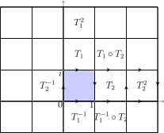

Section 8.2 Cosmic Crystallography
Imagine once again that we are two-dimensional beings living in a two-dimensional universe. In fact, suppose we are living in the torus in Figure 8.2.1 at point \(E\) (for Earth). Our world is homogeneous and isotropic, and adheres to Euclidean geometry. Our lines of sight follow Euclidean lines. If we can see far enough, we ought to be able to see an object, say \(G\) (for galaxy), in different directions. Three different lines of sight are given in the figure.
In fact, if we suppose for a minute that we can see as far as we wish, then we would be able to see \(G\) by looking in any direction that produces a line of sight with rational slope. In reality, we can't see forever, and this limitation produces a visual boundary. We will let \(r_{obs}\) denote the distance to which we can see, which is the radius of our observable universe. To have any hope of seeing multiple images of the same object, the diameter of our observable universe, \(2r_{obs}\text{,}\) must exceed some length dimension of the universe.
Getting back to the torus, the easiest way to find the directions in which one can view \(G\) is to tile the plane with identical copies of the torus. Place the Earth at the same point of each copy of the rectangle, and the same goes for other objects such as \(G\text{.}\) Figure 8.2.2 displays a portion of the tiling, and our visual boundary. According to Figure 8.2.2, in addition to the instance of \(G\) in the fundamental domain, 5 of its images would be visible.
Practically speaking, detecting multiple images of the same object is complicated by the finite speed of light. Since the lines of sight in Figure 8.2.2 have different lengths, we see the object \(G\) at different times in its evolution. In reality, galaxies evolve dramatically over time. So even if we found an image of \(G\) looking in some “longer” direction, it might look so different we wouldn't recognize it.
Still, humanity has pondered the tantalizing possibility that one of the many distant galaxies we've detected with our telescopes is actually the Milky Way galaxy. Based on recent lower-bound estimates of the size of our universe, however, it is now clear that we will not be treated to such a sight.
Rather than spotting different images of a particular object, perhaps we can detect multiple images of the same object indirectly. Consider a catalog of similar objects that don't evolve too rapidly (such as galaxy superclusters). Assume we have observed \(N\) such objects and they appear to be sprinkled randomly about the universe (the universe is homogeneous and isotropic after all). In Figure 8.2.3 we have generated a two-dimensional random distribution of point sources.
Rather than hunt for two copies of the same source, we compute the distance between each pair of sources in the catalog (we must make an assumption about the geometry of space to compute these distances), giving us \(N(N-1)/2\) distances. If the catalog contains no repeat images, then the distances ought to follow a Poisson probability distribution. The histogram of the \(N(N-1)/2\) distances is called a pair separation histogram (PSH) and is given in Figure 8.2.4.
Now consider the catalog in Figure 8.2.5(a). As in Figure 8.2.3, the observable radius has been scaled to 10 units. The objects we can observe may look evenly distributed, but in fact there are multiple images of the same object. In this simulation the universe is a torus and the observable radius exceeds the dimensions of our universe. Placing ourselves at the origin in this catalog, our Dirichlet domain in this torus universe has been superimposed on the catalog in Figure 8.2.5(b).
The pair separation histogram for this simulated catalog appears in Figure 8.2.6. Notice the spikes in the histogram. Some distances are occurring with higher frequency than one would expect by chance alone. At first glance, it looks like the spikes occur at distances of about 10, 14, and 17 units.
What causes these spikes? Look at the catalog plot again in Figure 8.2.5(b), and find an object near the top edge of the fundamental domain. We've highlighted a group of objects that look a bit like a sled. There is a copy of this object just below the bottom edge of the fundamental domain. The distance between a point in this sled and its image below equals the length of the width dimension of our torus, which is 14 in this simulation. Indeed, there are lots of points for which we see an image displaced vertically in this manner, so this distance will occur lots of time in the pair separation histogram.
Another copy of our big sled appears just to the right of the right edge of the fundamental domain. So, the distance between a point and its horizontally displaced image will be equal to the length dimension of the torus, which is 10 in this simulation. There are also lots of these pairs in the catalog - in fact more than before since this dimension of the fundamental rectangle is smaller. This accounts for the larger spike in the histogram above the distance 10.
Finally, there are some objects in the fundamental domain for which a diagonally displaced copy is visible. The length of this diagonal is \(\sqrt{10^2 + 14^2} \approx 17.2,\) and this accounts for the third, smallest spike in the histogram.
Spikes appear in the PSH precisely because the torus universe \(\mathbb{C}/\Gamma\) is constructed from isometries that move each point in the space by the same distance. A transformation \(T\) of a metric space with the property that
for all points \(p\) and \(q\) in the space is called a Clifford translation. Any translation in \(\mathbb{C}\) is a Clifford translation; every point gets moved the same distance. However, a rotation about the origin is not: the further a point is from the origin, the further it moves. In the exercises you prove that non-trivial isometries in the hyperbolic plane are not Clifford translations.
Recall that to create the PSH of a catalog in the cosmic crystallography method we must first make an assumption about the geometry of the universe. The PSH in Figure 8.2.6 was generated by computing the Euclidean distances between points in the catalog. If we assumed a hyperbolic universe and used the hyperbolic metric to produce the PSH, the spikes would vanish.
In essence, the method of cosmic crystallography pours over catalogs of astronomical objects, computing distances between all pairs of objects in the catalog, and then looking for spikes in the pair separation histogram. The detection of a spike in the histogram that cannot be reasonably explained by chance in the distribution of objects indicates a finite universe.
The method of cosmic crystallography has limitations beyond the obvious challenge of accurately measuring astronomical distances. As you will see in the exercises, different shapes might produce identical spikes, so finding a spike in a PSH doesn't precisely determine the shape of our universe (though it would certainly narrow down the list of candidates). All ten Euclidean 3-manifolds will reveal a spike (or spikes) in the PSH if we can see far enough to detect the finite dimensions. Some of the elliptic 3-manifolds will produce spikes in the PSH, but no hyperbolic 3-manifold would reveal itself by this method, since hyperbolic isometries are not Clifford translations.
To date, no statistically significant spikes have been found in the pair separation histograms computed from real catalogs. Two good surveys of this method, including information about generating simulated catalogs, can be found in [26] and [24].
More sensitive methods have been proposed that might detect any 3-manifold, regardless of geometry, and we look at one such method below.
Example 8.2.7. Collecting correlated pairs.
In a catalog of images, there are two types of pairs that might generate recurring distances. The cosmic crystallography method outlined previously detects what have been called Type II pairs in the literature: A Type II pair is a pair of points of the form \(\{p,T(p)\}\text{,}\) where \(T\) is a transformation from the group of isometries used to generate the manifold. If \(T\) transforms each point the same distance (i.e., if \(T\) is a Clifford translation), then this common distance will appear in the PSH as a spike.
The other type of recurring distance can arise from what's been called a Type I pair of points in the catalog. A Type I pair consists of any pair \(\{p,q\}\) of points. If we can see images of these points in a copy of the fundamental domain, say \({T(p),T(q)}\text{,}\) then since transformations preserve distance, \(d(p,q) = d(T(p),T(q))\text{,}\) and this common distance will have occurred at least twice in the PSH. The figure below shows a portion of the torus tiling of the plane depicted in Figure 8.2.2. The two types of pairs of points are visible: Type I pairs are joined by dashed segments, and Type II pairs are joined by solid segments.
Type I pairs will not produce discernible spikes in the PSH. Even in simulations for which several images of a pair of points are present, the spike generated by this set of pairs having the same distance is not statistically significant.
The collecting correlated pairs (CCP) method, outlined below, attempts to detect the Type I pairs in a catalog.
Suppose a catalog has \(N\) objects, and let \(P = N(N-1)/2\) denote the number of pairs generated from this set. Compute all \(P\) distances between pairs of objects, and order them from smallest to largest. Let \(\Delta_i\) denote the difference between the \((i+1)\)st distance and the \(i\)th distance. Notice \(\Delta_i \geq 0\) for all \(i\text{,}\) and \(i\) runs from 1 up to \(P-1\text{.}\)
Now, \(\Delta_i = 0\) for some \(i\) if two different pairs of objects in the catalog have the same separation. It could be that unrelated pairs happen to have the same distance, or that the two pairs responsible for \(\Delta_i = 0\) are of the form \(\{p,q\}\) and \(\{T(p),T(q)\}\) (Type I pairs). (We're assuming there are no type II pairs in the catalog.)
Let \(Z\) equal the number of the \(\Delta_i\)'s that equal zero. Then
denotes the proportion of the differentials that equal zero. This single number is a measure, in some sense, of the likelihood of living in a multiconnected universe.
In a real catalog involving estimations of distances, one wouldn't expect Type I pairs to produce identical distances, so instead of using \(Z\) as defined above, one might let \(Z_\epsilon\) equal the number of the \(\Delta_i\)'s that are less than \(\epsilon\text{,}\) where \(\epsilon\) is some small positive number. For more details on this method, see [28].
Exercises Exercises
1.
The Klein Bottle. We may view the Klein bottle as a quotient of \(\mathbb{C}\) by the group of isometries generated by \(T_1(z) = z + i\) and \(T_2(z) = \overline{z}+1+i\text{.}\) A fundamental domain for the quotient is the unit square in \(\mathbb{C}\text{.}\) The edges of the square are identified as pictured. The \(a\) edges are identified as they would be for a torus, but the \(b\) edges get identified with a twist.
- Verify that \(T_1\) maps the bottom edge of the unit square to the top edge of the unit square, and that \(T_2\) maps the left edge of the unit square to the right edge with a twist.
- Determine the inverse transformations \(T_1^{-1}\) and \(T_2^{-1}\text{.}\)
-
We may compose any number of these four transformations \(T_1, T_2, T_1^{-1},\) and \(T_2^{-1}\) to tile all of \(\mathbb{C}\) with copies of the unit square. In the following figure we have indicated in certain squares the transformation (built from the four above) that moves the unit square into the indicated square. Complete the figure below by indicating a composition of the four transformations that maps the unit square to the indicated square in \(\mathbb{C}\text{.}\)
 - Verify that \(T_2\circ T_1 = T_1^{-1}\circ T_2\text{.}\)
- Show that \(T_1\) is a Clifford translation of \(\mathbb{C}\) but \(T_2\) isn't. It follows that in a Klein bottle universe, cosmic crystallography would only be able to detect one dimension of the Klein bottle.
2.
Figure 8.2.9 shows a simulated catalog from a two-dimensional Euclidean universe with the corresponding pair separation histogram. There are two Euclidean surfaces: the Klein bottle and the torus. Based on the cosmic crystallography analysis, what do you think is the shape of the universe? Explain your answer. Also, make an estimate at the total area of the universe.
3.
Prove that the transformation \(T_{a}\) in Example 7.7.11 used to generate the two-holed torus as a quotient of \(\mathbb{D}\) is not a Clifford translation. Can you generalize the argument to show that any isometry in \(\mathbb{D}\) that takes one edge of a regular \(n\)-gon to another edge is not a Clifford translation?
4.
A rough estimate for the number of images of an object one might see in a catalog can be made by dividing the volume of space occupied by the catalog by the volume of the Dirichlet domain at our position in the universe. Suppose we live in an orientable two-dimensional universe. In fact, suppose we live in \(H_g\) for some \(g \geq 2\text{,}\) and our Dirichlet domain is the standard \(4g\)-gon as in Figure 7.5.24. Set the curvature of the universe to \(k = -1\text{.}\)
- According to Gauss-Bonnet, what is the area of the Dirichlet domain?
- What is the area of the observable universe, as a function of \(r_{obs}\text{?}\) That is, what is the area of a circle in \((\mathbb{D},{\cal H})\) with radius \(r_{obs}\text{?}\)
- Determine the ratio of the area of the observable universe (A(O.U.)) to the area of the fundamental domain (A(F.D.)). Your ratio \(A(O.U.)/A(F.D.)\) will depend on \(r_{obs}\) and \(g\text{.}\)
-
Complete the following table in the case \(g = 2\text{.}\) Assume \(r_{obs}\) has units in light-years.
Table 8.2.10. Estimating the number of images of an object one might see in a catalog \(r_{obs}\) A(O.U.) A(F.D.) Ratio 2 4 6 8 - Repeat part (d) in two other cases: \(g = 4\) and \(g = 6\text{.}\)
5.
Repeat the previous exercise in the case of the non-orientable two-dimensional universe, \(C_g\text{.}\)